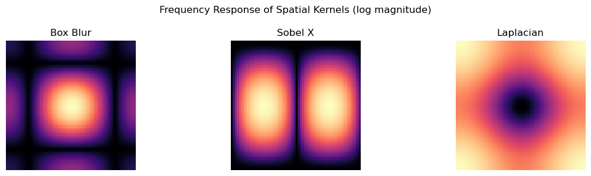
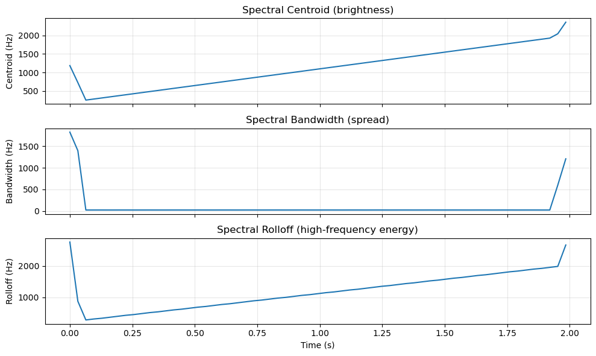
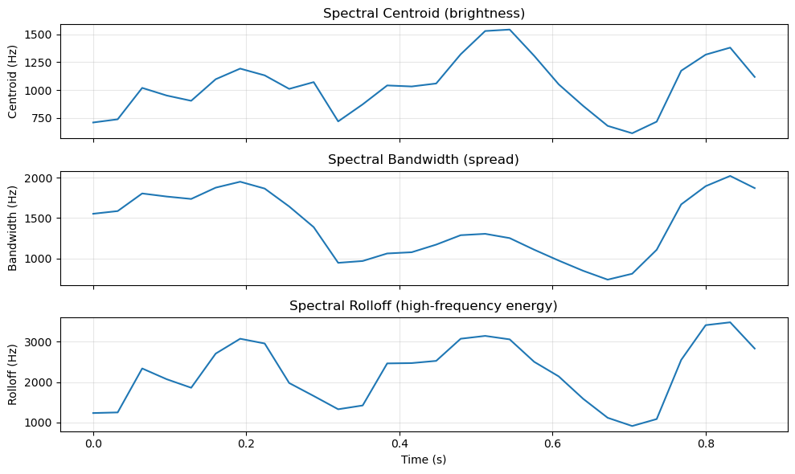

Low-pass → blur (smoothing)
High-pass → edges and details
Why Edges are High Frequency
Edges are “rapid changes,” so they show up as high frequencies, while smooth regions are low frequencies.
Connection to Week 2 spatial filters: - Derivative-like kernels (Sobel, Laplacian) emphasize change → high frequencies - Smoothing kernels (Gaussian, box blur) suppress high frequencies
This is the frequency view of what we did in Week 2.
Code
# Visualize frequency response of spatial kernelskernels = {"Box Blur": np.ones((3, 3), dtype=np.float32) /9.0,"Sobel X": np.array([[-1, 0, 1], [-2, 0, 2], [-1, 0, 1]], dtype=np.float32),"Laplacian": np.array([[0, 1, 0], [1, -4, 1], [0, 1, 0]], dtype=np.float32),}size =64fig, axes = plt.subplots(1, len(kernels), figsize=(12, 3))for ax, (name, kernel) inzip(axes, kernels.items()):# Pad kernel to size x size padded = np.zeros((size, size), dtype=np.float32) kh, kw = kernel.shape padded[:kh, :kw] = kernel# Compute FFT and shift K = np.fft.fftshift(np.fft.fft2(padded)) mag = np.log1p(np.abs(K)) ax.imshow(mag, cmap="magma") ax.set_title(name) ax.axis("off")plt.suptitle("Frequency Response of Spatial Kernels (log magnitude)")plt.tight_layout()plt.show()print("Key message: kernels have 'passbands' too.")print("CNN filters learn these frequency responses.")

Key message: kernels have 'passbands' too.
CNN filters learn these frequency responses.
Convolution Theorem (Practical)
Convolution in space/time ↔︎ multiplication in frequency:
x(t) * h(t) \leftrightarrow X(\omega)H(\omega)
Why this matters: - For large kernels, FFT-based convolution can be faster - “Filtering is filtering” across domains - Helps debug CNN behavior (what frequencies does a layer pass?)
Convolution is what we do when we “slide a filter over a signal/image.”
In the frequency domain, that same operation becomes simple multiplication:
Instead of sliding and summing in time/space, you multiply spectra.
This makes it easier to predict what a filter does:
Low‑pass filters remove high frequencies → blur
High‑pass filters remove low frequencies → edges
It can also be faster for large kernels (FFT‑based convolution).
For CNNs, it gives intuition: a layer’s kernel passes some frequencies and suppresses others.
So the theorem is not just math—it’s a practical lens for understanding filtering and model behavior.
Top-left: original signal and its smoothed (convolved) version in time
Spectral centroid: “brightness” (center of mass of spectrum)
Spectral bandwidth: spread of energy
Spectral rolloff: frequency below which X% of energy lies
Energy/RMS, zero-crossing rate
Mel spectrogram features (MFCCs)
and many more (e.g., spectral flux, spectral flatness, chroma, pitch, MFCC deltas)
These compress waveforms into low-dimensional summaries for downstream ML.
Code
import numpy as npimport matplotlib.pyplot as pltimport librosaimport librosa.display# Compute small feature table from audio (assumes x_chirp and sr defined)centroid = librosa.feature.spectral_centroid(y=x_chirp, sr=sr, hop_length=512)[0]bandwidth = librosa.feature.spectral_bandwidth(y=x_chirp, sr=sr, hop_length=512)[0]rolloff = librosa.feature.spectral_rolloff(y=x_chirp, sr=sr, hop_length=512)[0]frames = np.arange(len(centroid))times = librosa.frames_to_time(frames, sr=sr, hop_length=512)fig, axes = plt.subplots(3, 1, figsize=(10, 6), sharex=True)axes[0].plot(times, centroid)axes[0].set_ylabel("Centroid (Hz)")axes[0].set_title("Spectral Centroid (brightness)")axes[0].grid(alpha=0.3)axes[1].plot(times, bandwidth)axes[1].set_ylabel("Bandwidth (Hz)")axes[1].set_title("Spectral Bandwidth (spread)")axes[1].grid(alpha=0.3)axes[2].plot(times, rolloff)axes[2].set_ylabel("Rolloff (Hz)")axes[2].set_xlabel("Time (s)")axes[2].set_title("Spectral Rolloff (high-frequency energy)")axes[2].grid(alpha=0.3)plt.tight_layout()plt.show()print("Features track the chirp's increasing frequency over time.")

Features track the chirp's increasing frequency over time.
Code
import osimport numpy as npimport matplotlib.pyplot as pltimport librosaimport librosa.display# Try to use hello.wav; fall back to existing x_chirp/sr if not foundhello_path ="hello.wav"if os.path.exists(hello_path): x, sr = librosa.load(hello_path, sr=None) # keep original sample rateelse: x = x_chirp # assumes x_chirp and sr already defined# sr already defined in your notebookcentroid = librosa.feature.spectral_centroid(y=x, sr=sr, hop_length=512)[0]bandwidth = librosa.feature.spectral_bandwidth(y=x, sr=sr, hop_length=512)[0]rolloff = librosa.feature.spectral_rolloff(y=x, sr=sr, hop_length=512)[0]frames = np.arange(len(centroid))times = librosa.frames_to_time(frames, sr=sr, hop_length=512)fig, axes = plt.subplots(3, 1, figsize=(10, 6), sharex=True)axes[0].plot(times, centroid)axes[0].set_ylabel("Centroid (Hz)")axes[0].set_title("Spectral Centroid (brightness)")axes[0].grid(alpha=0.3)axes[1].plot(times, bandwidth)axes[1].set_ylabel("Bandwidth (Hz)")axes[1].set_title("Spectral Bandwidth (spread)")axes[1].grid(alpha=0.3)axes[2].plot(times, rolloff)axes[2].set_ylabel("Rolloff (Hz)")axes[2].set_xlabel("Time (s)")axes[2].set_title("Spectral Rolloff (high-frequency energy)")axes[2].grid(alpha=0.3)plt.tight_layout()plt.show()print("Features computed from hello.wav"if os.path.exists(hello_path) else"Features computed from chirp")

Features computed from hello.wav
How Engineered Features Connect to CNNs
CNN layers learn filters that behave like feature extractors
Early layers often resemble edge detectors / Gabor-like filters
Spectrogram + CNN = learned pattern recognition in time–frequency domain
Key insight: Deep learning automates feature engineering, but understanding classic features helps debug and interpret models.
Quiz 3 Study Guide
Topics to review:
Fourier Transform intuition (time ↔︎ frequency, magnitude vs phase)
Euler’s formula / complex exponentials as rotating vectors
FFT peaks: fundamentals, harmonics, and why multiple peaks appear
Winding machine idea: how a frequency “matches” a signal
2D FFT interpretation (low vs high frequencies in images)